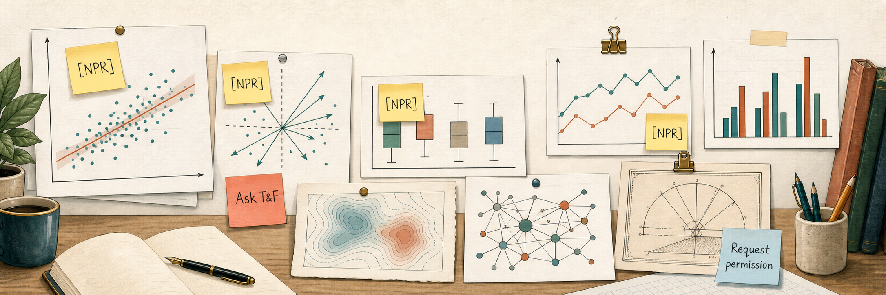

Getting Permissions Right (or at Least Honest)
Field Notes on Tracking Down Image Permissions

This is another post in the Making of Vis-MLM series, alongside Quarto Is Not LaTeX, However Hard It Tries and Mind Your Chunks. Those were about the writing and rendering pipeline.
This one is about a problem that has nothing to do with Quarto or the writing process at all: what do you actually do when your book is heading into production, your publisher hands you a permissions checklist and you have several hundred figures in the book?
The setup
A statistics and data visualization book like Visualizing Multivariate Data and Models in R uses images from a variety of sources. Most of mine are generated straight from data by my own R code – a scatterplot, a biplot, an HE plot and even a couple I developed during the writing process (partial variable plots, now in heplots::pvPlot()). The copyright status of those is not in question: copyright protects creative expression, not the output of running a well-known method on a dataset.1
But a book like this also picks up figures the ordinary way any writer does:
- a diagram from a blog post that explained an idea more clearly than I could draw it myself,
- a journal figure I wanted to use to show my own past work,
- a couple of historical images,
- some book covers to show my recommendations, even a hand-drawn sketch.
None of those are mine to just use willy-nilly, without thought.
My publisher’s permissions guide lays out six steps:
- identify third-party material,
- confirm it’s really necessary for exposition,
- determine its copyright status,
- apply for permission,
- document what you got,
- submit it all with the manuscript files for printing
That’s a perfectly reasonable process on paper. It is also completely unworkable as an actionable checklist once you’re past a handful of images. There’s no way to hold “which of my 300+ figures are even ‘third-party’ (and who is the second party?) and what’s the status of each” in your head. Notes you made along the way are often incomplete, but in any case they are a terrible database. The interesting part of this project wasn’t the permissions law – that’s the publisher’s job to specify. It was figuring out how to turn a fuzzy compliance obligation into something with an actual state you can query, hand off, and trust.
Translating the publisher’s requirements into an actionable process collapsed those six steps into three real phases: finding every candidate image, classifying each one against the guide’s rules – which folds in confirming it’s actually necessary for the exposition along with pinning down its copyright status – and building the infrastructure to track requests and evidence through to submission.
Step 1: Finding the candidates
The first real question is embarrassingly basic: which images in the book are not generated by my own hand or code? Most figures are produced inline by a chunk of R, and figure captions in this book carry a comment2 pointing back to the generating script when the code itself isn’t shown in the printed text. So the “third-party candidate” list might be: every figure-labeled chunk with no matching source script.
That sounds like a job for grep, and it almost is, except a book accumulates more than one way to embed an image over a couple of years of writing. Some figures come in through the normal knitr::include_graphics() path, some are inserted directly as markdown images (“”), and a few older ones are plain HTML <img> tags left over from an early draft. A scanner that only catches one of these will quietly miss a third of the candidates. The actual detection logic ended up needing all three patterns:
# Three different ways a chapter can embed a static image
if (str_detect(line, "include_graphics")) {
img <- str_match(line, 'images/[^"\']+')[, 1]
} else if (str_detect(line, "<img\\s") && str_detect(line, "images/")) {
img <- str_match(line, 'images/[^"\']+')[, 1]
} else if (str_detect(line, "!\\[") && str_detect(line, "\\(images/")) {
# pandoc syntax: {#fig-label}
m <- str_match(line, "!\\[([^\\]]*)\\]\\((images/[^)]+)\\)")
img <- m[, 3]
}Running this against every chapter file and diffing against the set of figures with a known generating script produced the real candidate list – around twenty images, once historical illustrations and author-generated diagrams (a PowerPoint export, a hand-traced diagram) were set aside as clearly not requiring anyone else’s permission.
Step 2: Classifying images, skeptically
Here’s where most of the actual thinking happened, and where the publisher’s guide turned out to be stricter than my intuition. These are a few rules that reshaped how I looked at my own images/ folder:
- Not watermarked is not the same as public domain. An image circulating online without a visible copyright notice tells you nothing about its license – it just means nobody’s stamped it. “I found it on the internet” is not proof of anything but laziness.
- My own previous work still counts as third-party material. A figure I’d published in an earlier journal article is not automatically mine to reuse in a new book – the journal usually holds reproduction rights, and the right move is to check that publisher’s specific author-reuse policy rather than assume authorship settles it.
- A redraw is still third-party, unless it’s genuinely transformed. Recreating someone else’s diagram in your own style doesn’t launder the copyright unless what survives just is the underlying idea, not their specific expression of it. But any doctrine of fair use requires you to always cite the original author, as in “Source: Redrawn from an image by …”.
- Copyright doesn’t apply to raw data. This one cuts the other way: if you can rebuild a graphic from the underlying data yourself, the result is yours, even if someone else’s chart originally gave you the idea to make it.
The first rule turned out to be the most useful move in the whole project: chasing down provenance for an anonymous web graphic is a rabbit hole that can eat unlimited time with no guarantee of an answer at the end. For example, a diagram I used of geometrical objects in 1 through 4 dimensions had been circulating online since at least 2015 – no watermark, no credited artist, and a reverse image search3 turned up nothing conclusive about where it actually came from.
When in doubt, re-draw
Rather than keep searching for a rightsholder who might not exist, or worse, treating “I can’t find an owner” as license to just use it, the cleanest resolution was to stop depending on someone else’s picture at all: redraw it myself, in this case as a TikZ figure that now generates both the print PDF and the HTML version directly from source. No request, no waiting, no unresolved provenance question – and it’s a good general instinct: when a third-party image is more trouble to trace than to just remake, remake it.
Not everything resolves that cleanly, though. One image – a small illustrative composite assembled years earlier from stock clipart – had no recorded source, no watermark, and no way to trace the individual elements back to a license. Claiming “probably public domain” would have been exactly the unsupported assumption the guide warns against. But stalling on it indefinitely wasn’t a real option either.
The resolution was to add a third classification, alongside “cleared” and “needs a permission request”: a status meaning, roughly, I’ve done what diligence I can, and this genuinely needs the publisher to make the call – flagged clearly, with the history of what was tried, rather than either guessing or blocking. Sometimes the honest answer to “does this need permission?” is “I can’t tell, and that’s worth saying out loud” instead of quietly picking whichever answer is more convenient.
The audit file
The working document behind all of this is a single markdown file, fig-permission-list.md, organized by chapter with one bullet per candidate image. Untagged entries still need a decision. A [NPR] (“no permission required”) or [TFQ] (“question for T&F”) tag means a decision has been reached, followed by an italicized paragraph making the actual case – not just the verdict, but the reasoning and evidence behind it. That distinction mattered more than it sounds: “no permission required” is a claim a publisher can challenge, and “I decided it was probably fine” isn’t a defense. The italics text exists so that six months later, or when an editor asks, the why is still sitting right there next to the what.
The redrawn tesseract-style diagram from earlier is described like this in the audit file:
- [NPR] `images/1D-4D.png` -- diagram of geometrical objects in 1-4 dimensions -- *NPR as of
2026-07-10: the old raster (an unattributed web graphic, found circulating online since at
least 2015 via reverse image search) has been **replaced by an author-drawn TikZ figure**;
source `latex/diagrams/fig-1D-4D.tex` in the repo (proof of authorship), which now generates
both `images/1D-4D.pdf` (print) and `images/1D-4D.png` (HTML). No third-party artwork remains.*The MV Juicer composite – the one that ended up needing the third classification – carries its whole diligence trail the same way:
- [TFQ] `images/MV-juicer.png` -- "MV Juicer" illustration; appears to be a composite of stock
clipart (fruit-head, juicer line art, gear-brain head) assembled in `images/MV-juicer.pptx`
(T&F Appendix A explicitly lists ClipArt as potentially copyrighted) -- *TFQ: resolved
2026-08-23 (MF) -- the individual clipart elements can't be traced (no watermarks, but per
guide rule 2 that doesn't establish public domain; MF has no record of the original source,
and a reverse image search is the only remaining option, with no guarantee of a conclusive
answer). Rather than block on an unresolvable search or wrongly claim NPR, this is flagged as
a question for T&F to rule on.*And an untagged entry – still just a plain description, waiting on Step 4 – looks like this, no verdict attached yet:
- `images/ReavenMiller-3d-annotated.png` -- "artist's rendition" of data from @ReavenMiller:79
(if reproduced from the 1979 *Diabetologia* article, the rightsholder is Springer; the STM
Permission Guidelines route may apply since CRC and Springer are both signatories)Three bullets, three different amounts of resolved thinking behind them – and that unevenness is exactly the point of keeping this as prose first. A spreadsheet cell wants one value; this document wants to hold a verdict, an untagged open question, and a paragraph of due diligence side by side, in whatever state each one is actually in.
Step 3: From prose audit to trackable spreadsheet
The classification pass produces something that reads well but doesn’t track well: a written audit, one entry per figure, with the reasoning spelled out in prose. That document is real work and shouldn’t be thrown away – it’s the evidence trail a publisher will eventually want. But you can’t hand a prose document to an assistant and ask “what’s still outstanding?” without them re-reading the whole thing every time.
So the audit became the source, and a small script turned it into a working spreadsheet – one row per image, regenerated from the markdown tables rather than hand-copied, so the two can never quietly drift apart. The script pulls from both status tables, not just the “needs permission” one – otherwise the third classification from Step 2 would exist only in prose, exactly the kind of thing this spreadsheet was supposed to make trackable:
# Parse each status table out of the markdown audit and turn it into
# one tracking-spreadsheet row per figure, keeping the two apart
required_rows <- parse_markdown_table(audit_doc, heading = "Permission required")
tfq_rows <- parse_markdown_table(audit_doc, heading = "Flagged for T&F")
to_rows <- function(rows, status) {
map_dfr(rows, function(row) {
tibble(
filename = extract_image_path(row$figure),
rightsholder = row$rightsholder,
status = status,
route = NA_character_, # filled in by hand once researched
applied_on = NA_character_,
received_on = NA_character_
)
})
}
tracking <- bind_rows(
to_rows(required_rows, "permission_required"),
to_rows(tfq_rows, "flagged_for_publisher")
)Re-running that script after editing the audit regenerates the whole tracking file – which is exactly the property you want (no possibility of a stale row nobody remembers to update), and exactly the property that made a “don’t run this while requests are in flight” rule necessary, since a couple of columns (who was actually contacted, what came back) are filled in by hand and aren’t derivable from the audit at all. A flagged-for-publisher row carries the same shape as a permission-required row, just a different status – so “still waiting on a publisher decision” shows up right next to “still needs a request sent,” instead of living only in the prose audit where the last section left it.
The last piece was working out how to actually reach each rightsholder, since “email them” isn’t one thing – a large publisher usually runs requests through a formal clearance system, while an individual blogger or academic usually just wants a direct email. Sorting the tracking rows into a small number of routes (formal publisher system, direct contact, “raise this internally since it’s the same publisher,” “no contact found yet”) turned a flat list of twenty unknowns into something with a clear next action attached to each one.
What actually landed in the spreadsheet, permissions-tracking.csv, is eighteen columns wide, tracing each image all the way from “where does this appear in the manuscript” through “have we heard back?” to mark an image as resolved.
chapter,qmd_file,qmd_line– where the image lives in the source, down to the linefig_label,filename,source– the Quarto figure label, the image path, and the caption-derived attribution textcopyright_status–permission_required,verify, orTFQ(flagged for the publisher, per Step 2)rightsholder_or_route,necessary– who holds the rights (or the route to find out), and Step 2’s necessity checkroute– how to actually reach them:CCC,publisher-page,direct-contact,internal-T&F,manual-followup-needed,nearly-ready, orn/aapplied_date,applied_by,contact– filled in by hand once a request actually goes outreceived_date,doc_path– filled in once permission comes back, with a path to the saved evidencesubmitted_date,status,notes– overall progress and the research trail behind it
Most of that first block is derivable from the audit and the .qmd chapter sources; everything from applied_date onward is exactly the part that can’t be, which is the whole reason this needed to be a spreadsheet and not just a nicer-looking document.
A random peek at a few rows (real data, restricted here to the columns that don’t carry anyone’s contact details) gives a sense of what “trackable” actually looks like in practice:
tracking |>
select(chapter, fig_label, filename, copyright_status, route, necessary, status) |>
car::some(6)#> chapter fig_label filename copyright_status
#> 1 01-Prelude.qmd fig-ReavenMiller-3d images/ReavenMiller-3d-annotated.png permission_required
#> 2 01-Prelude.qmd fig-tesseract images/tesseract-frames.png permission_required
#> 4 02-intro.qmd fig-cover-GEB images/Cover-GEB.png permission_required
#> 5 03-getting_started.qmd fig-datasaurus-html images/DataSaurusDozen.gif permission_required
#> 10 05-pca-biplot.qmd fig-MV-juicer images/MV-juicer.png TFQ
#> 17 index.qmd <NA> images/icons/Rennie-cover.png permission_required
#> route necessary status
#> 1 CCC Y not started
#> 2 manual-followup-needed Y not started
#> 4 publisher-page Y not started
#> 5 nearly-ready Y not started
#> 10 <NA> Y flagged for T&F
#> 17 internal-T&F Y not startedRow 17’s <NA> in fig_label is its own small honesty check: that image (a book-cover icon on the index page) isn’t sitting inside a labeled {r} chunk at all – just a plain markdown image – so the scanner has no label to attach. A reminder that “the spreadsheet says so” is only as good as what the scanner could actually see.
Keeping track
Regenerating the spreadsheet from the audit is exactly the property you want – no possibility of a stale row nobody remembers to update – and exactly the property that makes it dangerous once requests are actually out the door: a naive re-run overwrites every column, including the ones nothing but a human reply can fill in.
The fix wasn’t a rule about when it’s safe to re-run the script; it was a small function, update_permissions(), that owns writing to the tracking file, so the build script only has to merge around it instead of trusting that nobody touches the CSV at the wrong moment:
update_permissions(fig_label = "fig-ReavenMiller-3d", status = "applied", applied_by = "Gavin")That one line replaced a fragile discipline problem with a fixable code problem, in two smaller ways than I first expected. Identifying the row for an image sounds like it should just be the figure’s label, until I noticed that one label can cover two files – fig-tesseract labels both an animated .gif and its individual .png frames, so fig_label alone is ambiguous there. update_permissions() matches on fig_label plus filename together, and errors rather than guessing when only one is given and it’s still ambiguous.
And a status transition wants more than the status word itself attached to it – marking a row "applied" is a lot less useful without when, so the function stamps applied_date (or received_date, for "granted") to today unless you pass one explicitly. Small stuff, but it’s the kind of small stuff that a spreadsheet edited by hand quietly stops doing after the third or fourth update.
The handoff
None of this was about clearing every permission myself. The point was to get to a state where someone else – in this case a wonderful research assistant – could pick up the tracking spreadsheet, create a ready-to-use email template, and a short list of what’s still missing. Then actually make progress without needing me in the loop for every step. The real deliverable of this whole exercise wasn’t a final “permissions cleared” report – that takes weeks to months and isn’t something a few days of tooling can shortcut. It was “permissions trackable”: a state where anyone looking at the spreadsheet can see “what’s outstanding, and what happens next” without having to ask.
If there’s one thing worth taking from this beyond the specifics of image permissions: any compliance task that starts to feel unmanageable in your head is usually a sign you need a small data structure, not more discipline. The spreadsheet didn’t make the permissions process faster. It made it something I could actually finish and be confident of the result.
Footnotes
⚠️ There’s a caution here: Not every dataset you want to use is free, in the sense of beer: That means a copyrighted work costs no money to use, but you still must follow all of the owner’s strict legal rules. A case in point is the data from the Framingham Heart Study, which I wanted to use in my
HistDatapackage. It’s one of the most historically important studies in epidemiology – it coined the term “risk factor” and pioneered multivariate logistic regression for disease risk – so it seemed like an obvious fit. The catch: theframingham.csvfile that’s everywhere – Kaggle, DataCamp, half the textbooks that teach logistic regression – turns out to be an NHLBI BioLINCC “Teaching Dataset” release, not freely redistributable. Even the one CRAN package that legitimately uses it,riskCommunicator, does so under its own specific NHLBI approval request, a permission that doesn’t transfer to anyone else’s package. A safer route – and, honestly, the more historically apt one forHistData– is to build the dataset from the small tables published directly in the original 1961 and 1967 papers instead, which carries no licensing question at all. But that’s a lot of work.↩︎These were manually inserted in the
.qmdtext as markdown comments of the form<!-- fig.code: R/workers-pca.R -->. This also allowed me to compile an R Code Appendix in the HTML version, helping readers to explore the code I used in developing an image.↩︎Searching by an image instead of by text: you upload or paste in the picture itself, and the search engine looks for visually similar or identical images elsewhere online, which can reveal an original source, an earlier appearance, or a photographer/artist credit that the copy you found never carried. I used Google Images (the camera icon in the search bar) and TinEye, which specializes in exactly this and is often better at turning up the earliest indexed appearance of a given image.↩︎